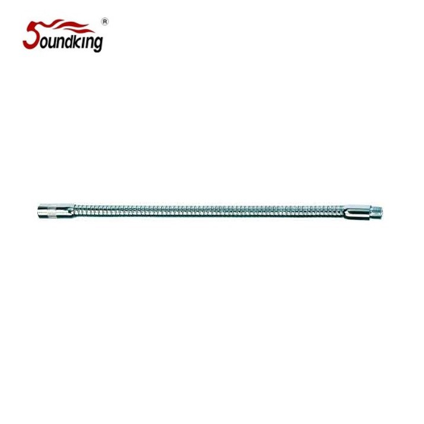

DE057B는 마이크 스탠드에 추가 체결해 마이크 각도를 유연하게 조절할 수 있도록 해 주는 45 cm 길이의 블랙 구스넥 익스텐션입니다. DE056(40 cm)보다 5 cm 더 긴 길이로, 연단·설교대 등에서 마이크를 앞쪽으로 더 많이 내밀어야 하는 환경에 유리합니다.

마이크 스탠드 상단에 체결해 마이크 각도·위치를 유연하게 조정할 수 있는 45 cm 블랙 구스넥 익스텐션. DE056보다 긴 길이로 마이크를 앞쪽으로 더 내밀 수 있습니다.
DE057B는 일반 I형·T형 마이크 스탠드 상단에 체결하는 45 cm 길이의 구스넥 익스텐션으로, 블랙 컬러 단일 옵션으로만 제공됩니다. DE056(40 cm)과 비교해 5 cm 더 긴 길이는, 연단·설교대의 폭이 깊어서 마이크를 화자 쪽으로 더 내밀어야 하는 환경에서 체감 차이가 큽니다.
구스넥 자체의 유연한 각도 조절과 한번 구부린 형태가 유지되는 하드 플렉스 구조로, 다수의 발화자가 순차적으로 사용하는 환경에서도 매번 즉시 세팅 조정이 가능합니다. 50pcs 1box 단위 대량 공급에도 대응합니다.
| 모델명 | DE057B (블랙 전용) |
|---|---|
| 타입 | Mic Stand Gooseneck Extension |
| Length | 45 cm |
| Color | 블랙 전용 |
| 체결 규격 | 표준 마이크 나사 |
| 권장소비자가 | 8,800 원 / 개 (VAT 포함) |
※ 본 사양 · 단가는 수입원(현대에이브이씨) 2026-01-01 스탠드 가격표 기준입니다. 40 cm 길이 모델(DE056)은 블랙(B)과 스텐(은색, W) 2가지 색상으로 별도 제공됩니다.